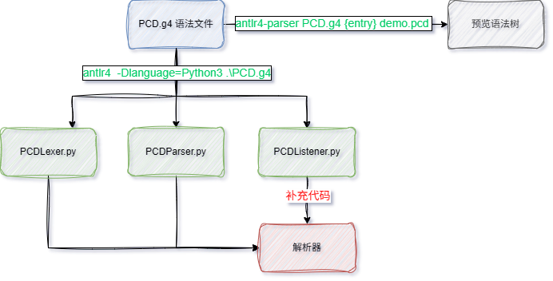
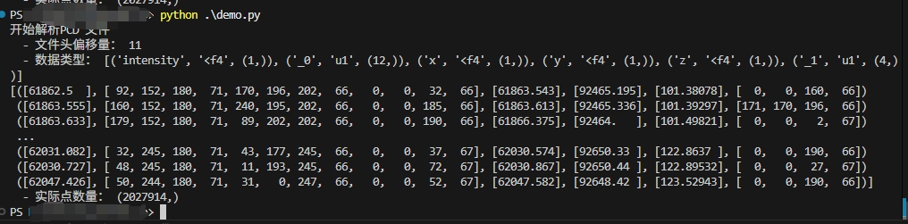

通过antlr4 开发pcd 文件解析器
实际生产中，并不是所有数据文件都是标准的类似于csv 的形式，也有一部分是通过特殊的文件头描述，例如pcd 点云文件。
有一些C/C++ 的程序可以解析这类文件，但是在通过python 调用这些文件是还需要单独（编译）安装依赖项。自己写解析器又比较麻烦。
于是想通过antlr4 来生成文件头解析器的骨架代码，然后手动补充关键的工作代码，即可构建好用的文件解析器。
而且可以生成不同目标语言的骨架代码，灵活性强。
本文只含功能验证，代码未作封装。

预备工作
只需要提前安装两个python 包：
pip install antlr4-toolsantlr4-parser {语法文件.g4} {入口规则} {代码文件}用于验证语法规则antlr4 -D=Python3 {语法文件.g4}用于生成目标Python 代码
pip install antlr4-python3-runtime用于构建自己的解析器
语法文件PCD.g4
语法文件中有几点需要注意的地方：
- 关键词会按照定义的先后顺序解析，例如：
// 定义位置代表优先级，如果ID 在前，则无法解析FIELDTYPE FIELDTYPE: [fFuUiI]; ID: [a-zA-Z_]+[a-zA-Z_0-9]*; - 一般词法全大写，语法全小写；
- 尽量减少重复定义，如
WS中尽量不要包含换行符，只包含空格和制表符就好了； - 因为没有跨行操作，所以每条基础的语法规则都是以换行结束；
pcd->header_line的定义是考虑到表头顺序不一致或者不全。
完整代码如下：
// PCD.g4
grammar PCD;
pcd
: header_line+
;
header_line
: comment
| version
| fields
| size
| type
| count
| width
| height
| viewpoint
| points
| data
;
/* ----- 语法定义 ----- */
comment: COMMENT NEWLINE;
version: KEY_VERSION NUMBER NEWLINE;
fields: KEY_FIELDS ID+ NEWLINE;
size : KEY_SIZE NUMBER+ NEWLINE;
type : KEY_TYPE FIELDTYPE+ NEWLINE;
count: KEY_COUNT NUMBER+ NEWLINE;
width: KEY_WIDTH NUMBER NEWLINE;
height: KEY_HEIGHT NUMBER NEWLINE;
viewpoint: KEY_VIEWPOINT NUMBER+ NEWLINE;
points: KEY_POINTS NUMBER NEWLINE;
data: KEY_DATA data_type NEWLINE;
data_type: (ASCII | BINARY | COMPRESSEDBINARY);
/* ----- 词法定义 ----- */
/* ----- 关键字 ----- */
KEY_VERSION : 'VERSION' ;
KEY_FIELDS : 'FIELDS' ;
KEY_SIZE : 'SIZE' ;
KEY_TYPE : 'TYPE' ;
KEY_COUNT : 'COUNT' ;
KEY_WIDTH : 'WIDTH' ;
KEY_HEIGHT : 'HEIGHT' ;
KEY_VIEWPOINT : 'VIEWPOINT' ;
KEY_POINTS : 'POINTS' ;
KEY_DATA : 'DATA';
ASCII: 'ascii';
BINARY: 'binary';
COMPRESSEDBINARY: 'binary_compressed';
FIELDTYPE: [fFuUiI]; // 定义位置代表优先级
ID: [a-zA-Z_]+[a-zA-Z_0-9]*;
/* ----- 通用 ----- */
COMMENT: '#' ~[\r\n]*;
NUMBER: [+-]? [0-9]+ ('.' [0-9]+)? ([eE] [+-]? [0-9]+)? ;
NEWLINE: [\r\n]+ ; // 匹配换行符
WS : [ \t]+ -> skip ; // 跳过空白字符完成代码
通过命令antlr4 -Dlanguage=Python3 .\PCD.g4 可以生成三个.py 文件：
PCDLexer.py词法分析器，无需更改；PCDParser.py语法分析器，无需更改；PCDListener.py遍历语法树，可以继承并补全关键代码；
代码主体框架
可以编写main.py 调用上面生成的代码：
# main.py
## 导入依赖项
from antlr4 import *
from PCDLexer import PCDLexer
from PCDParser import PCDParser
from PCDListener import PCDListener
## 测试字符串
input_str = """"""
class MyPCDListener(PCDListener):
"""补充完善核心业务代码"""
pass
def main():
# 读取输入字节流
input_stream = InputStream(input_str)
# 词法分析
lexer = PCDLexer(input_stream)
tokens = CommonTokenStream(lexer)
# 语法分析
parser = PCDParser(tokens)
tree = parser.pcd() # 假设入口规则是 pcd
# 打印语法分析结果
print(tree.toStringTree(recog=parser))
## 遍历语法树
walker = ParseTreeWalker()
listener = MyPCDListener()
walker.walk(listener, tree)
## 处理遍历结果
# ...
if __name__ == '__main__':
main()MyPCDListener
通过定义MyListener 继承PCDListener 类并重写关键代码：
import numpy as np
from demoListener import demoListener
"""通过遍历语法树，生成结构化的PCD 对象"""
class Field():
"""整合PCD 头中的字段相关属性"""
def __init__(self, name=None,count=None,type=None, size=None):
self.name = name
self.count = count
self.size = size
self.type = type
class PCD():
"""PCD 类，其实只包含文件头信息"""
def __init__(self):
self.version=0
self.fields:list[Field]=[]
self.width=0
self.height=0
self.data = None
self.points = 0
self.viepoints = []
self.header_comment = None
self.offset_line=0
self.anounymous_field_index = 0
def get_dtype_fields(self):
"""根据文件头的字段列表，构造用于解析文件的numpy 数据类型列表"""
dtype_fileds=[]
for f in self.fields:
if f.name == "_":
name = f"_{self.anounymous_field_index}"
self.anounymous_field_index+=1
else:
name = f.name
dtype_fileds.append((name, f'{f.type.lower()}{f.size}', (f.count,)))
return np.dtype(dtype_fileds)
class MyDemoListener(PCDListener):
"""遍历语法树的事件监听器"""
def __init__(self):
super().__init__()
self.pcd = PCD()
# 对于每一条语法规则都有enter 和exit 两个方法可以重写
# 分别对应开始解析和解析完成的操作，例如：
# 可以在文件开始解析时构造PCD 对象，如果迟了就可能会导致找不到对象
# 同样，再退出pcd 规则时记录文件头的行数，如果早了就会导致记录不准确
def enterPcd(self, ctx):
print("开始解析PCD 文件")
def enterComment(self, ctx):
"""
ctx 对象包含所有子语法/词法元素的对象，
可以通过函数调用的方式获得
通过getText() 方法可以获得对应的文本
"""
self.pcd.header_comment = ctx.COMMENT().getText()
def enterVersion(self, ctx):
version = ctx.NUMBER().getText()
self.pcd.version = version
# 下面通过filed,count,size,type 构建字段清单
def enterFields(self, ctx):
"""
对于ID+ 这种语法规则，其结果是一个数组，这就要求：
如果一个语法里面有多个ID+ 的定义，最好能拆分成多条子语法
"""
for i, id in enumerate(ctx.ID()):
name=id.getText()
if len(self.pcd.fields) <= i:
self.pcd.fields.append(Field(name=name))
else:
self.pcd.fields[i].name = name
def enterSize(self, ctx):
for i, token in enumerate(ctx.NUMBER()):
size=int(token.getText())
if len(self.pcd.fields) <= i:
self.pcd.fields.append(Field(size=size))
else:
self.pcd.fields[i].size = size
def enterType(self, ctx):
for i, token in enumerate(ctx.FIELDTYPE()):
type=token.getText()
if len(self.pcd.fields) <= i:
self.pcd.fields.append(Field(type=type))
else:
self.pcd.fields[i].type = type
def enterCount(self, ctx):
for i, token in enumerate(ctx.NUMBER()):
count=int(token.getText())
if len(self.pcd.fields) <= i:
self.pcd.fields.append(Field(count=count))
else:
self.pcd.fields[i].count = count
# 读取其他属性，不重要
def enterViewpoint(self, ctx):
self.pcd.viepoints = [float(v.getText()) for v in ctx.NUMBER()]
def enterWidth(self, ctx):
self.pcd.width = int(ctx.NUMBER().getText())
def enterHeight(self, ctx):
self.pcd.height = int(ctx.NUMBER().getText())
def enterPoints(self, ctx):
self.pcd.points = int(ctx.NUMBER().getText())
def enterData(self, ctx):
"""获取data 类型，可用于切换不同的方法解析文件"""
self.pcd.data = ctx.data_type().getText()
def exitProg(self, ctx):
"""文件头的偏移行数，用于解析文件体"""
self.pcd.offset_line = int(ctx.stop.line)其余main()代码
整体代码未作封装，因为属于是概念验证性的东西，下面是文件解析部分的测试代码：
# main.py
def main()
# ...
pcd = listener.pcd
pcd_dtype = pcd.get_dtype_fields()
print(pcd_dtype)
# 读取二进制
with open("sampled.pcd", "rb") as f:
# 跳过 header 行
for _ in range(pcd.offset_line):
f.readline()
binary_data = f.read()
## 如果是压缩二进制（没做测试）
# import zlib
# decompressed_data = zlib.decompress(binary_data)
buffer_len = len(binary_data)
element_size = pcd_dtype.itemsize
# 下面代码用于截断不完整二进制数据
valid_len = (buffer_len // element_size) * element_size
binary_data = binary_data[:valid_len]
data = np.frombuffer(binary_data, dtype=pcd_dtype) # 解析文件
## 读取ascii
# data = np.loadtxt("./sampled_ascii.pcd",dtype=pcd.get_dtype_fields(), skiprows=pcd.offset_line )
print(data)
print(data.shape)以上代码的速度非常快，解析二进制测试文件1.23GB，包含200多万条数据，用时不到1s。结果如下：

一个有意思的点，不要完全相信头文件里面的WIDTH，理论上它代表点的个数，实际上有可能是字节数。
完整示例代码参见demo.zip
参考资料
- The PCD (Point Cloud Data) file format
- MapIV/pypcd4 一个现代的pcd 文件解析工具
- strawlab/python-pcl 该库功能强大，但是已经归档，且不好用Nuitka 打包